Documento de Elena Vázquez
Solicitud de Elena Vázquez para revisar su contrato. Refleja un desacuerdo laboral, no prueba el crimen.
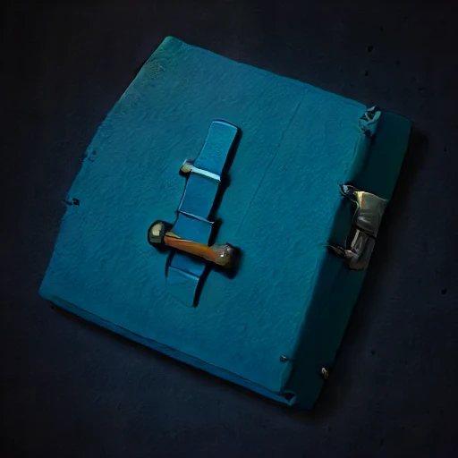
Documento de Javier
Solicitud de Javier para revisar su contrato. Refleja un desacuerdo laboral, no prueba el crimen.
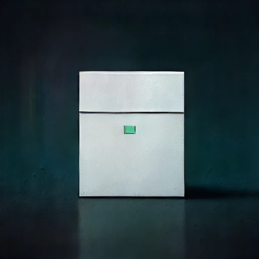
Documento de Sofía Méndez
Solicitud de Sofía Méndez para revisar su contrato. Refleja un desacuerdo laboral, no prueba el crimen.
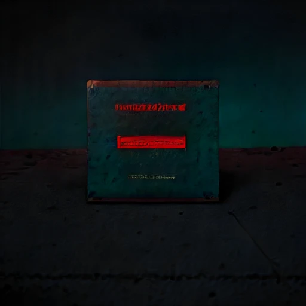
Documento de Kaelen
Documento recibido y firmado por Kaelen: La dirección había descubierto un fraude en los suministros y presentaría una denuncia al día siguiente.
Documento de Nora Vela
Solicitud de Nora Vela para revisar su contrato. Refleja un desacuerdo laboral, no prueba el crimen.
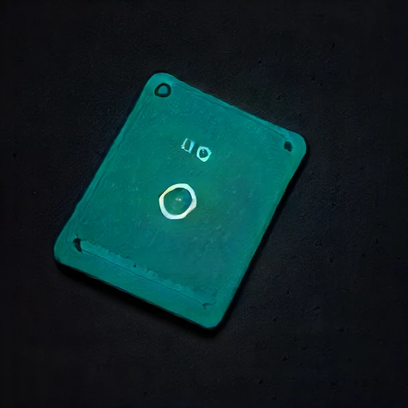
Inspección de Elena Vázquez
La inspección descarta uso de la credencial de Elena Vázquez para manipular el dispositivo del crimen. No se encontró su rastro en la zona intervenida.
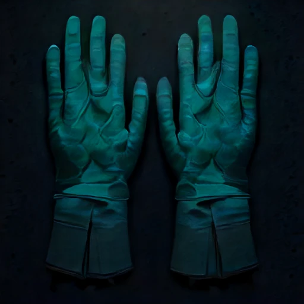
Inspección de Javier
La inspección descarta uso de la credencial de Javier para manipular el dispositivo del crimen. No se encontró su rastro en la zona intervenida.
Inspección de Sofía Méndez
La inspección descarta uso de la credencial de Sofía Méndez para manipular el dispositivo del crimen. No se encontró su rastro en la zona intervenida.
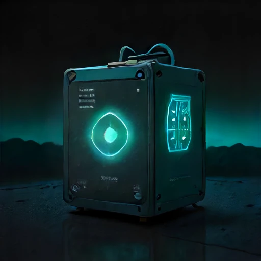
Inspección de Kaelen
El sello del panel manipulado identifica la credencial personal de Kaelen a las 22:15. La inspección confirma la alteración causante de la muerte; no consta otro acceso al dispositivo.
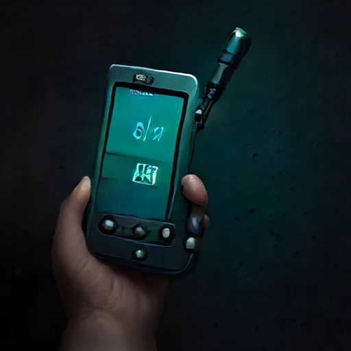
Inspección de Nora Vela
La inspección descarta uso de la credencial de Nora Vela para manipular el dispositivo del crimen. No se encontró su rastro en la zona intervenida.
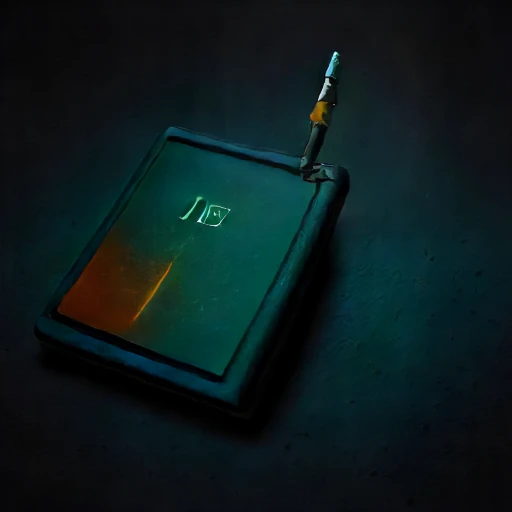
Registro de Elena Vázquez
Registro continuo: Elena Vázquez y Javier permanecieron en Sala de Navegación entre 22:05 y 22:26. Ninguno pudo entrar en Estación de Carga durante el crimen.
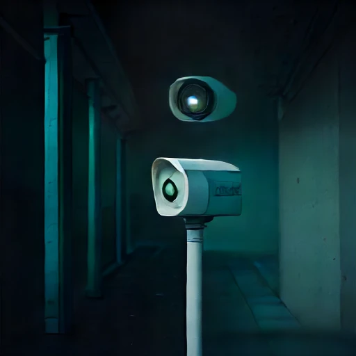
Registro de Javier
Registro continuo: Javier y Elena Vázquez permanecieron en Sala de Navegación entre 22:05 y 22:26. Ninguno pudo entrar en Estación de Carga durante el crimen.
Registro de Sofía Méndez
Registro continuo: Sofía Méndez y Nora Vela permanecieron en Cámara de Especímenes entre 22:05 y 22:26. Ninguno pudo entrar en Estación de Carga durante el crimen.
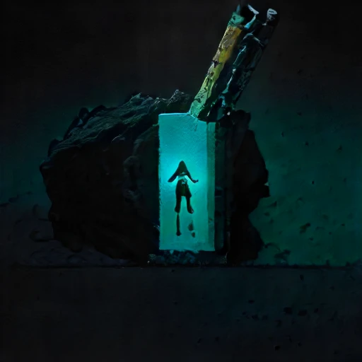
Registro de Kaelen
Registro de acceso independiente: Kaelen entró en Estación de Carga a las 22:15 y salió a las 22:18. Contradice su afirmación de haber permanecido en Sala de Cultivos Hidropónicos.
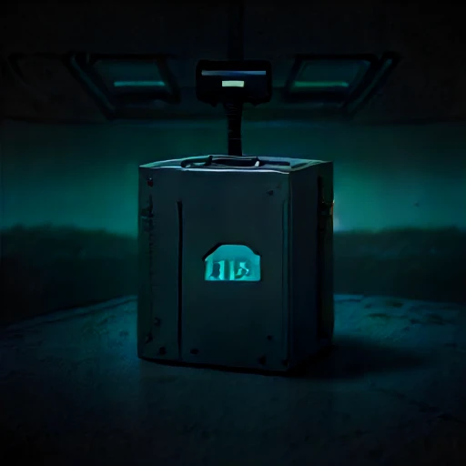
Registro de Nora Vela
Registro continuo: Nora Vela y Sofía Méndez permanecieron en Cámara de Especímenes entre 22:05 y 22:26. Ninguno pudo entrar en Estación de Carga durante el crimen.
Miguel Ángel Torres murió en Estación de Carga. Kaelen cometió el crimen mediante Sabotaje de un panel energético ficticio. La dirección había descubierto un fraude en los suministros y presentaría una denuncia al día siguiente.